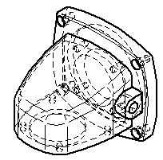
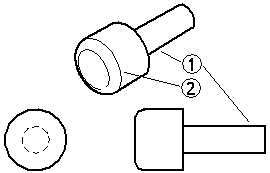
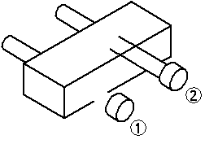
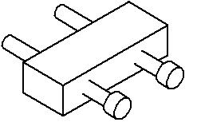
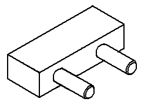

Edge display in part views
When you create a part view of a part or assembly, the software automatically determines which edges are visible and which are hidden, and uses line styles to depict these edges.

When Solid Edge processes part views, it does not create edges where edges do not already exist in the solid model. The only exception to this rule is for silhouettes, such as on a cylindrical shaft (1). Tangent edges (2) are visible edges that have adjacent faces whose normals are parallel at that edge (within the specified tolerance).

You can control the edge display to ensure that your part views show parts the way you want them on a drawing sheet. You can specify the line styles you want to use for visible, hidden, and tangent edges, change the line style for individual part edges, and hide and display individual part edges.
When the parts and assemblies depicted in your part views change, you can update the part views and the edge display without recreating the part views.
Setting up the edge display
The Edge Display tab on the Options dialog box allows you to set the line styles you want to use for the visible, hidden, and tangent edges of part views on the drawing sheet. These line styles are automatically applied when you create part views.
The templates delivered with Solid Edge contain line styles named, visible, hidden, and tangent. You can use the Style command on the Format menu to change these line styles or create new line styles.
If your organization has a standard line style for hidden, visible, and tangent edges, you can ensure that your drawings conform to standards by saving the edge display options in a template. You can then use the template to apply the same edge display options each time you create a new part view.
Changing the edge display
There are several ways you can change the edge display in the drawing view:
-
You can use the Properties command on the Edit or shortcut menu to change the edge display options for individual part views. When working with views of parts in an assembly, you can use the Properties command to change the edge display for each part in the assembly.
-
You can use the Show Hidden-Tangent Edges option on the Display page (Drawing View Properties dialog box) to show hidden lines and hidden-tangent lines in the drawing. This exposes the internal components and details of the parts.
After you create a part view, you can also use the Edge Painter command to change the edge display for individual edges. You can use the options on the command bar to specify the new line style and whether the entire edge or only a portion of the edge is changed. With the Edge Painter command, you can change the edge display one element at a time or multiple elements at one time. To change the edge display on more than one element at a time, you can click the mouse button and drag the cursor over the elements for which you want to change the edge display. When you release the mouse button, the edge display will be changed for the selected elements.
Displaying and hiding edges
In complex part views, you can use the Properties command to hide or display hidden edges and tangent edges. For example, many companies prefer not to display hidden edges on assembly drawings. Options on the Display page (Drawing View Properties dialog box) allow you to control the display of hidden lines and hidden-tangent lines in the drawing. You can use these options to show the internal components and details of the part.
-
Show Edges Hidden By Other Parts
-
Show Hidden-Tangent Edges
If you do not need hidden edge information, you can often increase drawing view performance by keeping hidden edges undisplayed. In addition, you can use the Hide Edges command to hide individual edges, and the Show Edges command to display individual edges.
Setting edge display defaults
You can use the Drawing View Display Defaults dialog box, accessible from the Display tab of the Drawing View Properties dialog box, to set default display settings for part edges. When you save the file, these settings are saved with the view. The drawing view level default settings control the display of parts added after the view is created that appear when the view is updated.
When you fold a drawing view, the folded view inherits its edge display settings from the source view.
Displaying and hiding parts
In an assembly drawing, you can use the Properties command to hide or display parts in the part view. When you hide or display parts in a part view, the part view becomes out-of-date. You can use the Update Views command to update the part view on the drawing sheet.
Interference between parts in an assembly
When there is physical interference between parts in an assembly, such as with a press fit or threaded parts, the default drawing view display settings may not process the edges properly where the parts interfere. For example, if a shaft is designed to be a press fit into a hole on its mating part, the edge of the hole is obstructed by the shaft, and it will not display as a visible edge. Also, because the shaft is physically larger than the hole, the shaft edges may not display (1) or they may not be trimmed properly (2).

This display is normal when using the default settings, which are designed to ignore interference to improve processing speed. Commands and options are available to adjust the display to process the interfering edges. Settings on the Display tab of the Drawing View Properties dialog box allow you to modify the edge display of the entire drawing view.
The Part Intersections options on the Advanced tab enable you to specify additional processing to determine where edges on mating parts intersect. Since interference only occurs when more than one solid body exists in a part view, you should leave the Do Not Process Intersections option set when working with part views of a single part.
When the option is set to Process Intersections Without Creating Face Intersections, the edges on the shaft will display properly.

You can use the Create Face Intersections of Threaded Parts option on the Advanced tab when working with mating parts that are threaded, such as a threaded stud that protrudes from a threaded hole, to obtain correct display.

If threads for holes slightly off parallel or perpendicular to the view plane do not display, try increasing the thread axis tolerance on the Advanced tab. If edges that should display as tangent in a drawing view instead display as visible or hidden, try increasing the tangent tolerance on the Advanced tab. Generally you should only adjust these tolerances if you are experiencing the specified view quality problems. Letting Solid Edge determine thread axis tolerance and tangent tolerance is recommended in most cases.
How do I
Change edge display in a drawing view or sketchShow part edges
Hide part edges
Set default display for part edges
Add graphics to a part view
Look up more details
Drawing View Display Defaults dialog boxShow Edges command
Hide Edges command
Edge Painter command
Edge Painter command bar
Draw In View command